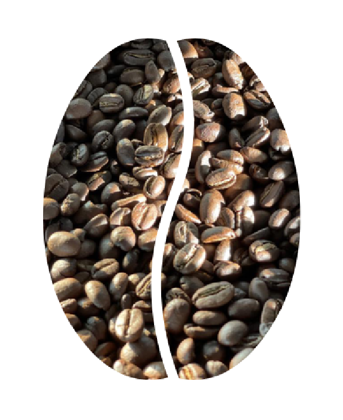
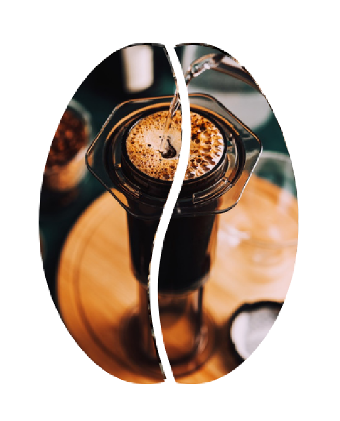
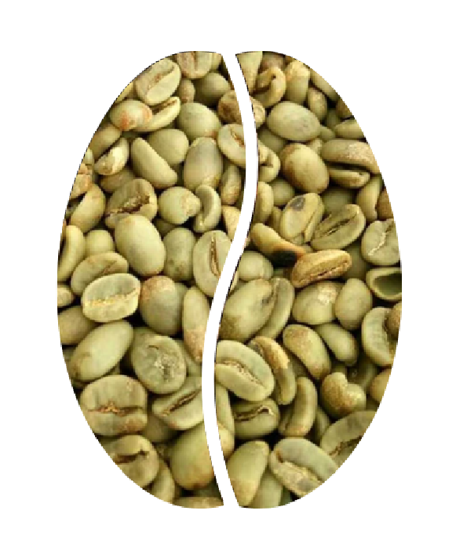
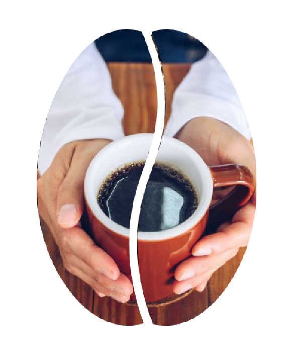
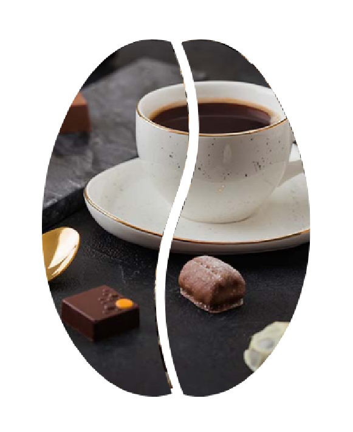

קפה שחור
קפה IN - מאוהבי קפה לאוהבי קפה
קפה שחור
מאיפה הוא בא?
לקפה שחור יש היסטוריה עשירה שראשיתה בימי קדם. מאמינים שמקורו באתיופיה, שם התגלו לראשונה פולי קפה. משם התפשט גידול וצריכת הקפה לאזורים שונים, כמו ערב ואירופה, ומעצבים את תרבות הקפה העולמית המוכרת לנו כיום.


איך חולטים?
ישנן מספר שיטות פופולריות להכנת קפה שחור, לכל אחת מאפיינים ייחודיים משלה. כמה שיטות חליטה נפוצות כוללות מזיגה, חליטה צרפתית, AeroPress ואספרסו. על ידי התנסות בטכניקות חליטה שונות, תוכלו למצוא את השיטה שמתאימה להעדפות הטעם שלכם ומוציאה את הטעמים הטובים ביותר בקפה השחור שלכם.
מה לגבי טעמים וזנים?
קפה שחור מציע מגוון רחב של פרופילי טעם, המושפעים מגורמים כמו סוג פולי הקפה, רמת הקלייה ושיטת הבישול. ערביקה ורובוסטה הם שני זני פולי קפה ידועים, כל אחד מציע טעמים שונים. מתווים אדמתיים ושוקולדיים ועד לגוונים פירותיים ופרחוניים, קפה שחור מציג מגוון של טעמים שאפשר לחקור וליהנות מהם.


קפה טוב לבריאות?
במידה, לקפה שחור יכולים להיות מספר יתרונות בריאותיים אפשריים. הוא מכיל נוגדי חמצון שיכולים לסייע בהגנה מפני נזק לתאים ועשויים לתרום לרווחה הכללית. בנוסף, קפה שחור נקשר עם ערנות נפשית מוגברת ויתרונות מטבוליים פוטנציאליים. עם זאת, חשוב לצרוך קפה שחור במתינות ולהיות מודע לרגישויות האישיות לקפאין.
איך משלבים?
שילוב של קפה שחור עם טעמים משלימים יכול להעלות את חווית הטעימה. שוקולד מריר, מאפים וחטיפים מלוחים יכולים לספק ליווי מענג לטעמים החזקים של קפה שחור. בנוסף, אתם יכולים לחקור ממתיקים וקרמים חלופיים כדי להתאים אישית את הקפה השחור שלכם ולשפר את טעמו בהתאם להעדפותיכם.
